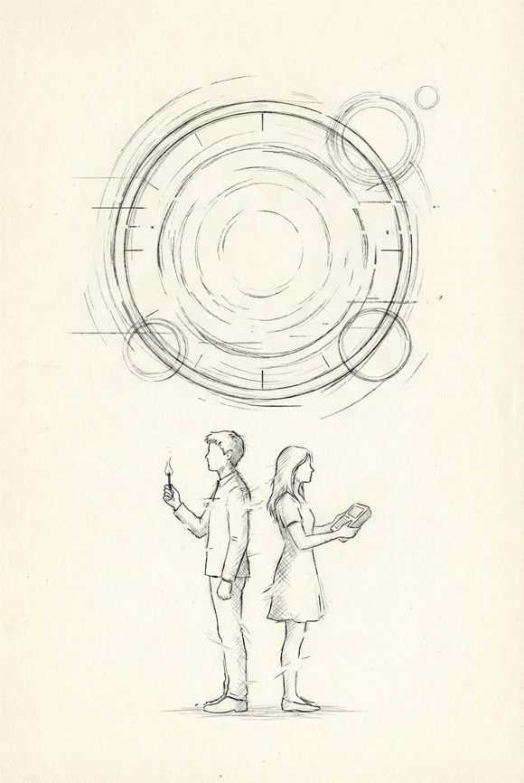

A former professional actor, Noah Whitmore’s roots in storytelling and performance run deep. Long before transitioning into the world of technology and corporate strategy, he established a foundation in the dramatic arts as a student performer, winning four Nebraska state speech championships and recognized as an NSAA Play Production State Contest "Outstanding Male Performer". He holds a degree in Speech, Communication, and Theater Education from the University of Central Missouri, a background that continues to inform his belief in the power of human connection and compelling narratives.
Today, Noah remains an active voice in his community, mentoring the next generation of performers as a high school drumline instructor and speech coach. Whether he is helping students develop their competitive pieces or emceeing local fundraisers, his work is driven by a lifelong passion for the stage.
Professionally, Noah balances this creative spirit with his role as an IT leader for a large non-profit healthcare organization, where he has over a decade blending education and technology. A dedicated lifelong learner, he earned an MBA in Information Technology Management and is currently a Doctoral Candidate (DBA). His academic research focuses on the strategic impact of emerging technologies, such as AI, on organizational performance.
At the heart of Noah’s work, both creative and technical, is a personal philosophy of intentionality. He frequently advocates for defining one’s own success through thoughtful, proactive choices rather than letting life "just happen". He lives in Nebraska, with his wife and their three sons, where he remains dedicated to building a life centered on community, family, and the art of the story.

Noah Whitmore
Origin Undetermined is a high-stakes dramatic duet that blends science fiction with deeply human family dynamics. The story follows siblings Chloe, a brilliant theoretical physicist, and Ethan as they use a chronospatial displacement conduit to travel back to 2010.
Their mission: to discover the cause of the house fire that claimed their parents' lives. But as they navigate strict temporal constraints and their own strained relationship, they uncover a tragic, deeply personal truth that changes everything they thought they knew about their past.
Available in Paperback Only
This peice was first performed during the 2025-2026 high school speech season by members of the Plattsmouth High School Speech Team. The script is intended for educational and performance use in high school speech competitions. The script is protected by copyright. Performance rights are granted to students and educators, as long as at least one physical script is legally purchased.